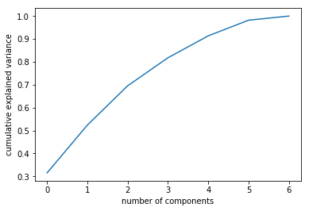

Data from the following link: https://archive.ics.uci.edu/ml/machine-learning-databases/ecoli/ The dataset was created by Kenta Nakai at the Institute of cellular and Molecular Biology in Osaka, Japan. It concerns the protein localization sites of E.coli subspecies. This is all secondary to my purpose of demonstrating PCA, but if you're interested the following papers were written about the dataset:
Reference: "Expert Sytem for Predicting Protein Localization Sites in
Gram-Negative Bacteria", Kenta Nakai & Minoru Kanehisa,
PROTEINS: Structure, Function, and Genetics 11:95-110, 1991.
Reference: "A Knowledge Base for Predicting Protein Localization Sites in Eukaryotic Cells", Kenta Nakai & Minoru Kanehisa, Genomics 14:897-911, 1992.
The principal use of PCA is visualization as well as feature selection. It shouldn't be used for clustering because k-means and other will be much more efficient. Really, you should turn to PCA when you have data with a lot of dimensions that you need to represent with fewer features. If you have >3 features, it's impossible to fully visualize the data to begin to hypothesize ideas about the relationships within. It's like you're have a cube of jell-o (stay with me here), that you need to represent on a flat surface (let's say a piece of paper). The algorithm of PCA are basically instructions on how to smear it on the paper so that it maintains some/most of its essential qualities, say, it's volume and is made up of squares. Of course, there will be loss of information in the process.
To summarize the math powering PCA, the unique attribute of eigenvectors is that they maintain the linearity (the line that it spans) during a transformation. This means that when we make a transformation, in our case condensing the data into fewer dimensions, the eigenvectors will maintain their trajectory, just getting stretched. Imagine our tasty cube of jell-o. If we were to stick a toothpick through it, then rotate it 180 degrees with our finger, the toothpick remains on its trajectory, ie it is the eigenvector of the transformation (the rotation). In PCA the transformation is the reduction of dimensions. The eigenvector is found that maximizes the variance captured on the line. This is our first principal component. The eigenvalues represent the variance covered by each principal component.
import pandas as pd
import numpy as np
import matplotlib.pyplot as plt
from sklearn.decomposition import PCA
import statistics as st
from sklearn.preprocessing import StandardScaler
data = pd.read_csv('/Users/cody/Documents/HES/HW1/Data/ecoli.csv', header=None)
data.head()
| 0 | 1 | 2 | 3 | 4 | 5 | 6 | 7 | 8 | |
|---|---|---|---|---|---|---|---|---|---|
| 0 | AAT_ECOLI | 0.49 | 0.29 | 0.48 | 0.5 | 0.56 | 0.24 | 0.35 | cp |
| 1 | ACEA_ECOLI | 0.07 | 0.40 | 0.48 | 0.5 | 0.54 | 0.35 | 0.44 | cp |
| 2 | ACEK_ECOLI | 0.56 | 0.40 | 0.48 | 0.5 | 0.49 | 0.37 | 0.46 | cp |
| 3 | ACKA_ECOLI | 0.59 | 0.49 | 0.48 | 0.5 | 0.52 | 0.45 | 0.36 | cp |
| 4 | ADI_ECOLI | 0.23 | 0.32 | 0.48 | 0.5 | 0.55 | 0.25 | 0.35 | cp |
Adding the labels from the .name file (see the link above). It's necessary to z-score all of the data, which means to make the average zero, and every entry in the rows is just how many standard deviations the point is from the mean. Otherwise, the columns with the largest spread would dominate the PCA, and it would seem like it would be capturing much more variance than it really is. Let's try both to demonstrate.
data.columns = ['name', 'mcg', 'gvh', 'lip', 'chg', 'aac', 'alm1', 'alm2', 'local_site']
labels = data.local_site
num = data.drop(['name', 'local_site'], axis=1)
z_scale = StandardScaler()
num1 = z_scale.fit_transform(num)
pca = PCA(n_components=4)
num_fit = pca.fit_transform(num1)
print(pca.explained_variance_ratio_)
[0.31508933 0.20874152 0.17164325 0.1224513 ]
The z-scored data covers less variance than the original, this is deceptive because it gives more weight to the larger ranges.
pca = PCA(n_components=4)
num_fit = pca.fit_transform(num)
print(pca.explained_variance_ratio_)
[0.5161681 0.2442034 0.08419874 0.07413522]
Let's look at the number and distribution of protein localization sites, which is the classifier.
data.local_site.value_counts()
cp 143
im 77
pp 52
imU 35
om 20
omL 5
imS 2
imL 2
Name: local_site, dtype: int64
We need to decide how many principal components we'll need to properly represent the data without too much variance loss. To do this we'll plot number of components and explained variance. Another way to do this is with a Scree plot, with the number of eigenvalues on the y-axis, but this is basically the same thing as explained variance but less immediately intuitive to understand.
pca = PCA().fit(num1)
plt.plot(np.cumsum(pca.explained_variance_ratio_))
plt.xlabel('number of components')
plt.ylabel('cumulative explained variance');

Looking at the explained variance, we can see that just two principal compononents cover ~ 52% of the variance, and three cover ~ 70% (remembering that python counts from 0, the above 0 = 1 principal component, 1 = 2 etc).
[0.31508933 0.20874152 0.17164325 0.1224513 ]
Df = pd.DataFrame(data = num_fit
, columns = ['principal component 1', 'principal component 2'])
Df.head()
| principal component 1 | principal component 2 | |
|---|---|---|
| 0 | -1.290352 | -0.324912 |
| 1 | -1.586012 | -1.034683 |
| 2 | -0.530483 | -0.130495 |
| 3 | -0.261721 | 0.338264 |
| 4 | -1.824364 | -0.731834 |
fig = plt.figure(figsize = (8,8))
ax = fig.add_subplot(1,1,1)
ax.set_xlabel('Principal Component 1', fontsize = 15)
ax.set_ylabel('Principal Component 2', fontsize = 15)
ax.set_title('E.coli Protein Localization sites', fontsize = 20)
targets = ['cp' , 'im', 'pp', 'imU','om','omL','imS','imL']
colors = ['r', 'g', 'b', 'c', 'y', 'm', 'k']
finalDf = pd.concat([Df, labels], axis = 1)
for target, color in zip(targets,colors):
indicesToKeep = finalDf['local_site'] == target
ax.scatter(finalDf.loc[indicesToKeep, 'principal component 1']
, finalDf.loc[indicesToKeep, 'principal component 2']
, c = color
, s = 30
, alpha = 1)
ax.legend(targets)
ax.grid()
We're know plainly able to differentiate the classes in a way we couldn't before thanks to PCA visualization. If we were using this for dimension reduction, 3 components would probably do the trick as they cover a two thirds of the variance but this really depends on the context of your analysis.